Carousel 07
The Stack I Didn't Choose · Stage 5
July 2026
I Didn't Rebuild My Setup.
I Exported It.
My stack changed and months of accumulated project context lived inside the tool I was leaving. My last prompt in it was to get that context out. It's the most useful thing I've done all year and it took sixty seconds.
R
Ryu Vy
AIToolsDaily24 · By a human, for humans
Stage five, and the strangest one. Claude Code arrived and it was good — good enough that I used it for everything. A colleague showed me how to set it up and a few ways to work with it, and within days it had become the most-used tool I had. If I could describe what I wanted, it would build it. This blog. The apps. All of it.
It also solved the problem from the last stage, from a direction I didn't expect. I'd been fighting to get decent slide decks out of AI. Then I worked out you can just build the deck as HTML — and once I did, I wasn't boxed in by PowerPoint's themes and colours at all. I could do dynamic slides, interactive graphs, live charts. It went from the thing AI was worst at to my default way of making presentations.
I even got a two-way pipeline working: a model in Excel and an HTML deck that update each other as the numbers change on either side. That's the point where it stopped being a tool I was trying out and became part of how I work.
And then
It worked well enough
that it got expensive.
That's the whole story and I'm going to leave it there — it isn't my decision to narrate and the numbers aren't mine to publish. What matters for you is the shape of it: the tool was working. That was the problem. Usage climbed because it was genuinely useful, and cost follows usage.
So I was moved to a different stack, which meant learning Cursor from scratch. And I was suddenly facing something I hadn't considered at all.
The Thing Nobody Warns You About
The Knowledge Base Doesn't Come With You
Months of context lived inside that tool. Not prompts — context. How each of my projects is structured. Conventions I'd settled on. Decisions I'd made and why. Corrections I'd issued once and never had to repeat. None of it was written down anywhere, because it never needed to be.
Losing that isn't like losing a tool. It's like losing a colleague who'd finally learned how you work.
So my last prompt in the old setup was this: take everything you know about my projects and write it out as a file the next tool can read. Not a backup of conversations — a distillation of what it had learned about me. Then I loaded that into the new stack on day one.
That single step is the difference between starting a new stack at zero and starting it at something like eighty percent. It's the most useful thing in this post and it costs one prompt, but you have to think of it while you still have access.
The Nine
Every Move, Copy-Paste Ready
01 / 09Port
Export the Brain
"Output everything you know about my
projects as one portable .md file."
The single best move I made. Months of accumulated project context — conventions, decisions, the shape of every codebase — lived inside the old tool. My last prompt in it was to export all of that into a file the new one could read. Most people switching stacks never think to do this, and they spend the next month re-teaching a new model things they'd already taught the old one.
02 / 09Load
Feed It Back In
"Here's my project context from my old
setup. Load this before we start."
The other half. An export is worthless if you don't front-load it into the new tool at the start of a session. Ten minutes of pasting beats three weeks of it slowly working you out — and you skip the awkward stretch where the new tool feels stupid because it simply doesn't know anything yet.
03 / 09Detail
Say More Than Before
"Be explicit: [full request, every
constraint spelled out]. Assume nothing."
Models differ in how much they infer. The one I moved to doesn't pick up context clues as readily as the one I left — so things I used to leave unsaid now have to be said. That's not a defect, it's a calibration. Find out how much inference yours does, then write to that level.
04 / 09Negative
Say What You Don't Want
"Don't add commentary, don't restructure
my code, don't 'improve' anything."
The genuinely surprising one. I expected to be more specific about the request; I didn't expect to have to be equally specific about the things I didn't want. Naming the failure in advance turns out to be much faster than correcting it afterwards — and it's the strongest real-world case for negative constraints I've run into.
05 / 09Rules
Write the Rules Down
"Standing rules for this project: [list].
Apply to every response."
Guardrails you retype every session aren't guardrails, they're a habit you'll drop under time pressure. Put the standing constraints in a file the tool reads and they hold across every conversation without you thinking about it.
06 / 09Scope
Fence the Blast Radius
"Only touch [file]. Change nothing else.
List every edit you made."
Trust is per-tool and it starts at zero. Until a new one has earned it, keep the edit surface small enough to actually review — and make it tell you what it touched, because the answer isn't always what you expected.
07 / 09Plan
Show Me First
"Before changing anything, tell me your
plan and wait for me to confirm."
One cheap confirmation step. A misread caught at the plan stage costs a sentence; the same misread caught after execution costs you unpicking twenty files. Worth it for the first few weeks on anything unfamiliar.
08 / 09Compare
Keep a Reference
"Same task, same input. Here's what my
old setup produced. Compare."
Without a reference point you can't tell a genuine capability drop from ordinary unfamiliarity — and those feel identical in week one. Keep a couple of known-good outputs from the old tool and check the new one against them properly.
09 / 09Accept
Good Enough Counts
Not as strong? Fine. Tighten the
guardrails and get the work done.
The new stack isn't as strong as what I had. It's also completely capable of doing the job, and I'd rather adapt my process than sulk about it. A tool you actually have beats one you don't. Tighten the guardrails, lower the inference you rely on, and get on with it.
// The honest assessment
The new stack isn't as strong as what I had. It doesn't pick up context clues as readily, so I write more explicitly and I spell out what I don't want — which I never had to do before. But it does the job, and the gap closes considerably once the guardrails are tight. Good enough that I use it every day is a real result, and I'd rather adapt my process than spend the year complaining about a decision that was never mine.
The Series
Five Eras, None of Them Mine
That's all five. The open era with its one rule. The in-house build and the workarounds it taught me. The lockdown, and finding out how much of my skill was muscle memory. The procurement era, where the tooling got good and I learned exactly where good stops. And this one — where it got too good, and the bill did what bills do.
Five stages in about a year, not one of them my call. If there's a lesson, it's the one in slide 01: the tool is never the asset. What you've accumulated is. Keep that portable and the next change costs you a week instead of a quarter.
The Slides
All Eleven, Full Size
The full set at full size. Save the ones you'll actually use — or screenshot the lot.
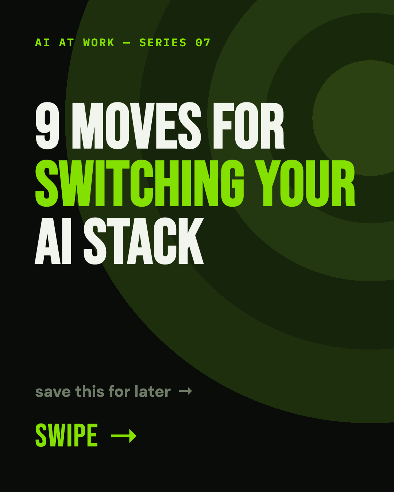
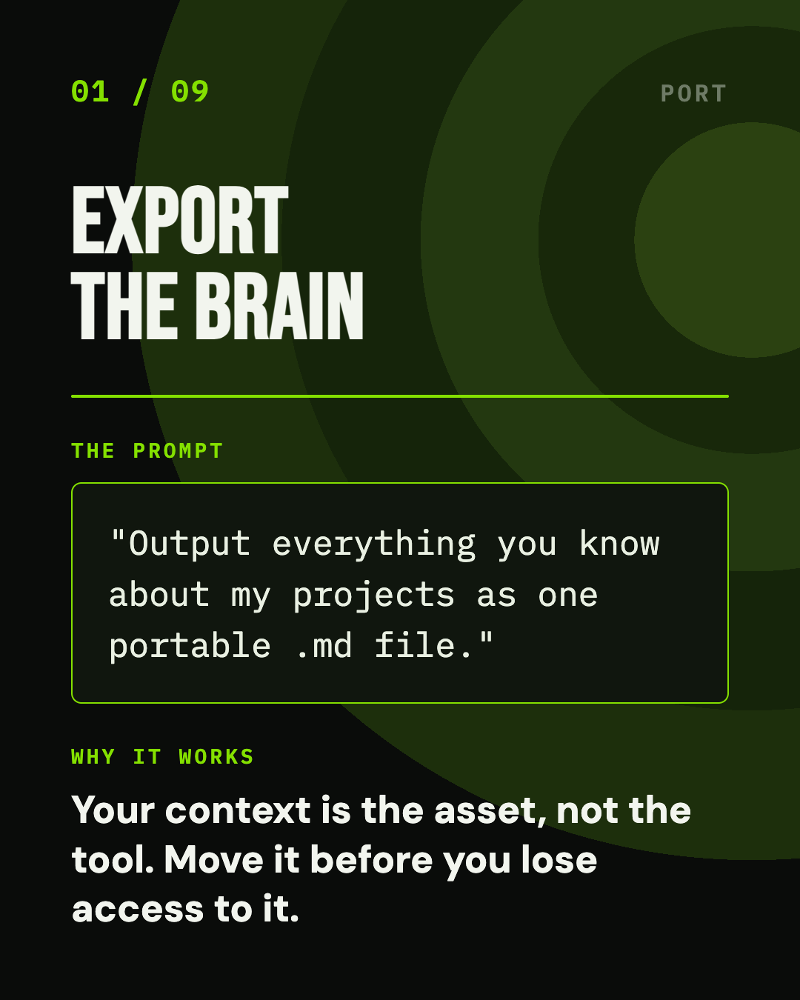
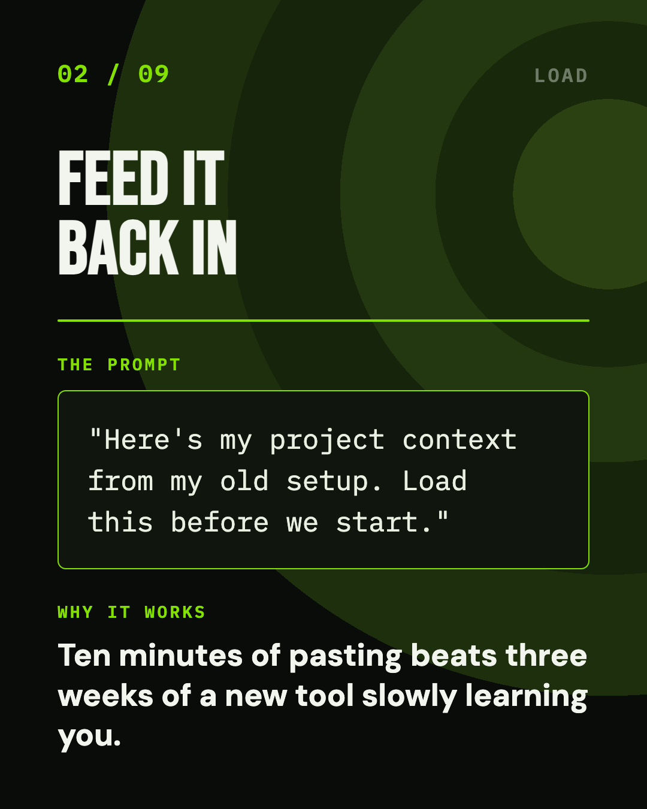
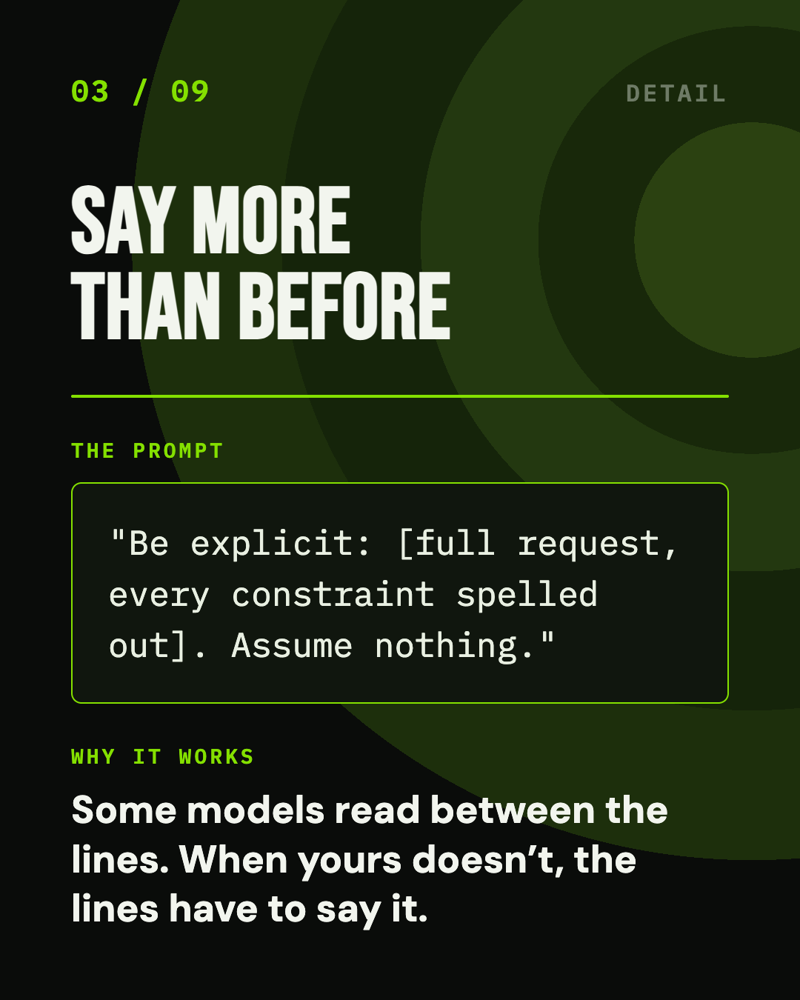
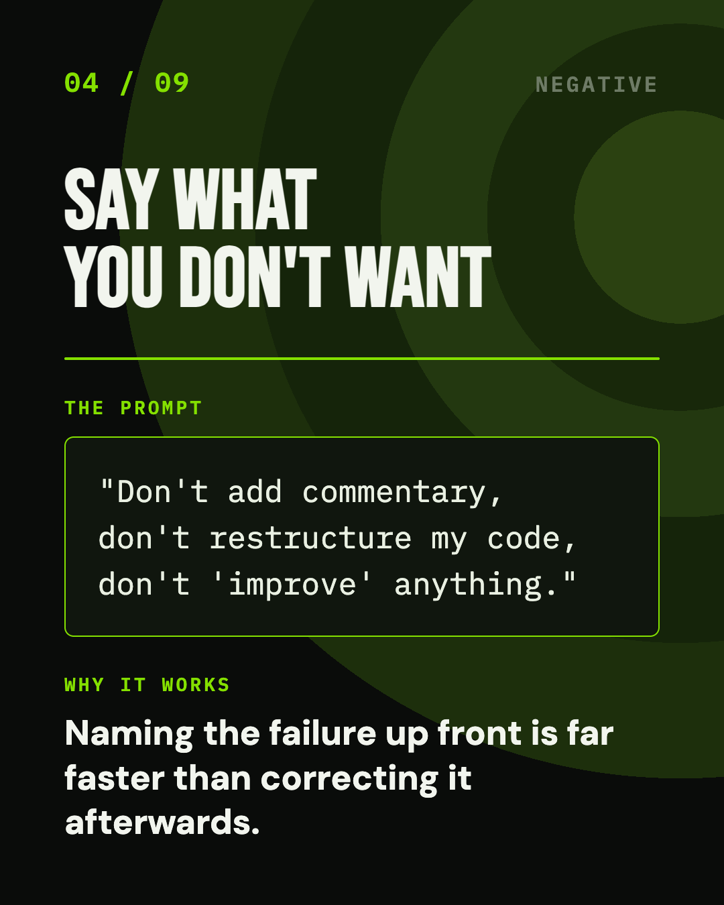
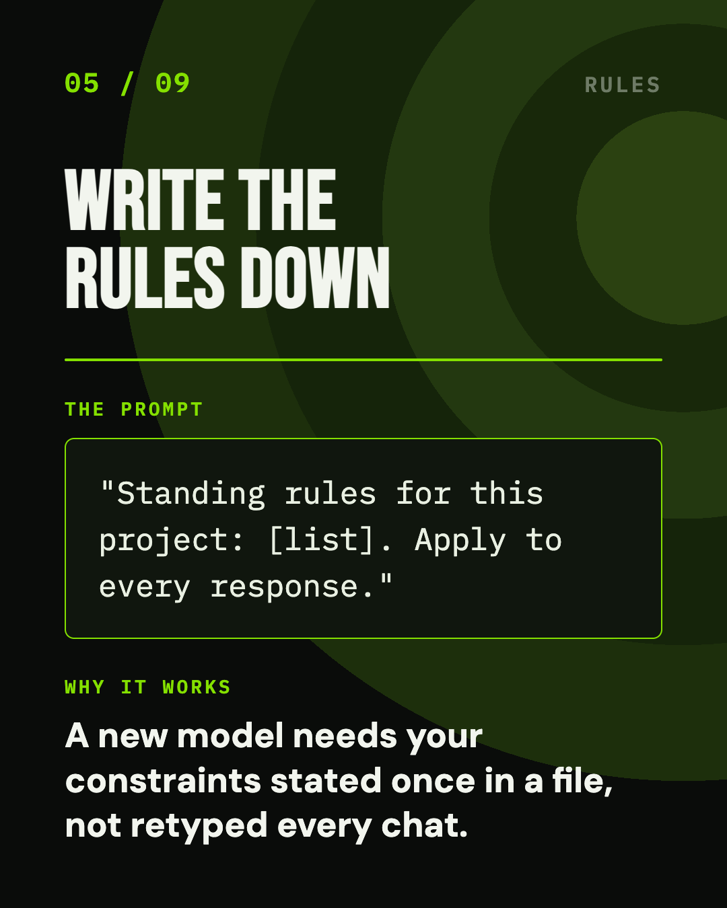
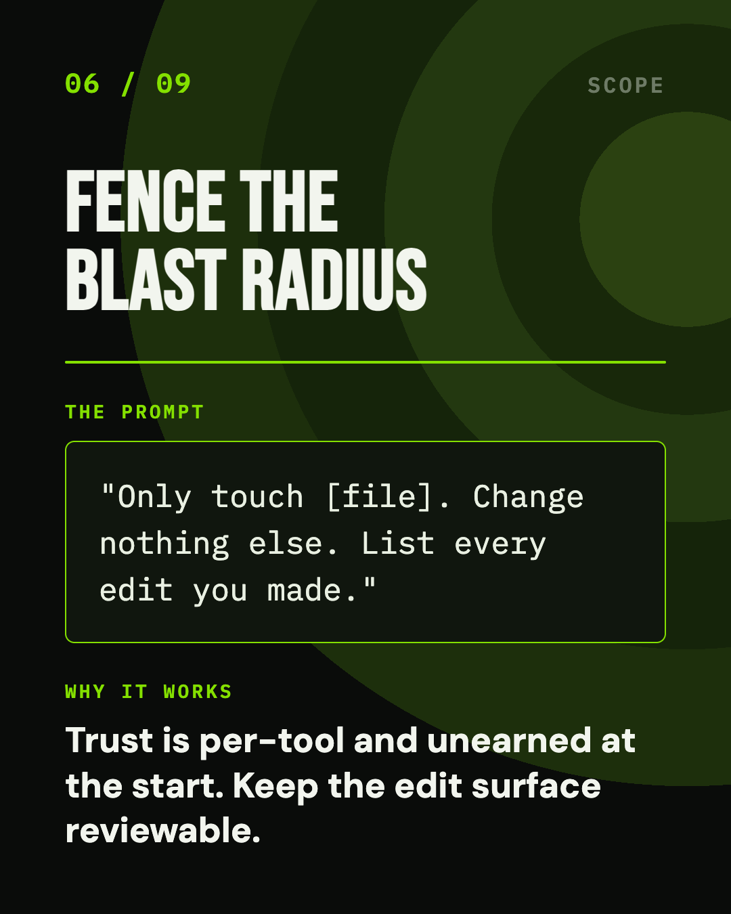
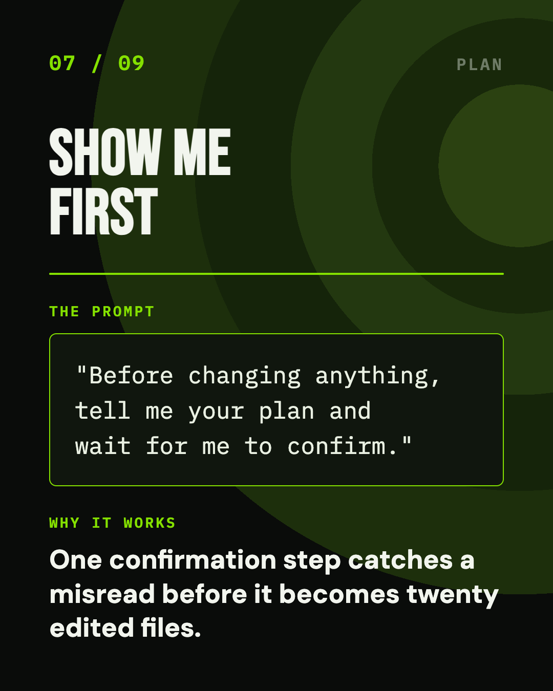
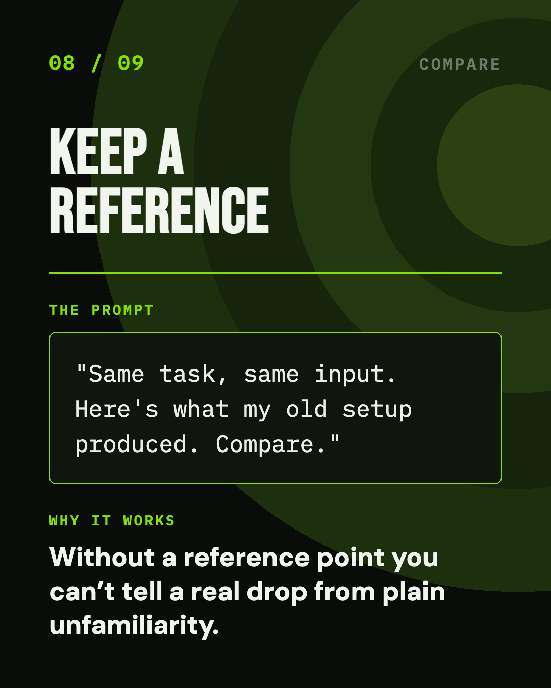
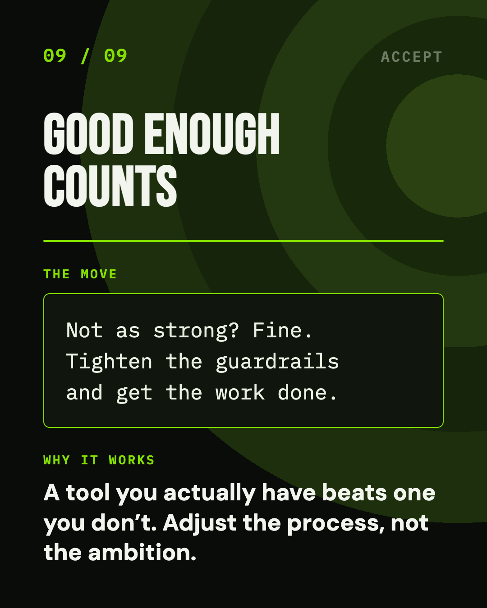
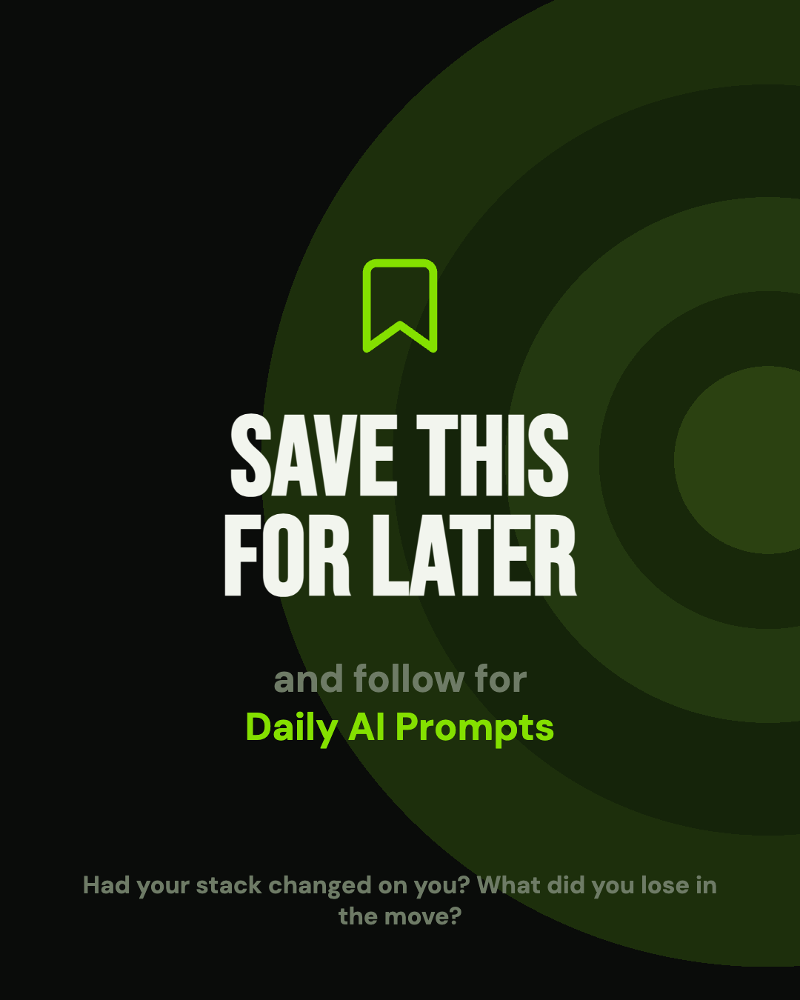
11 slides · 1080×1350